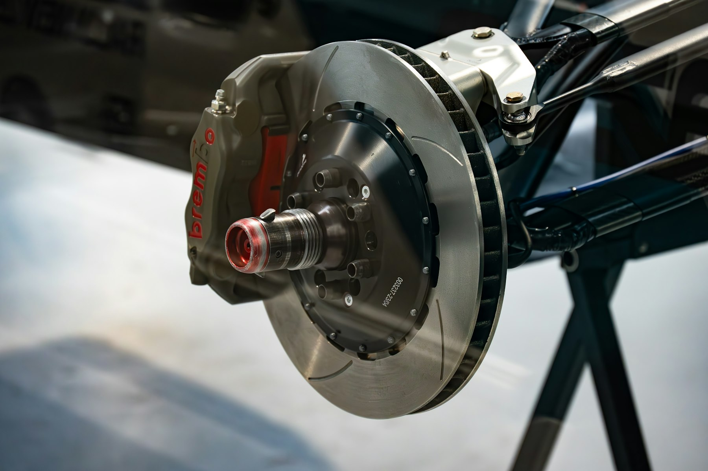
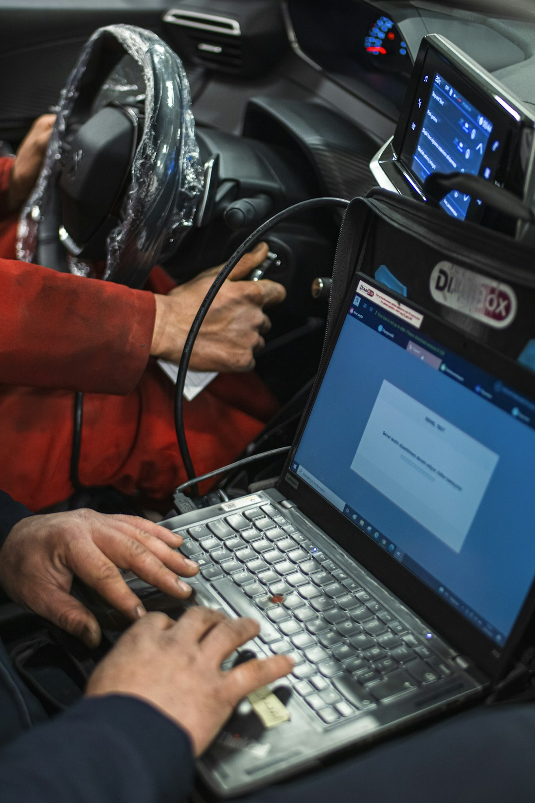
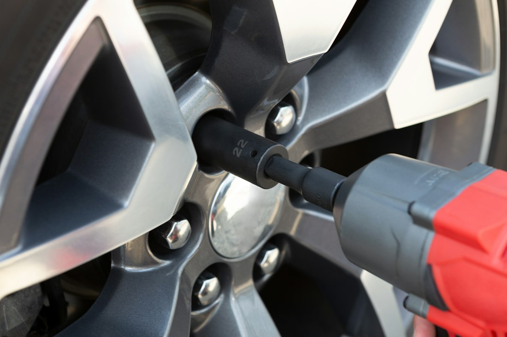
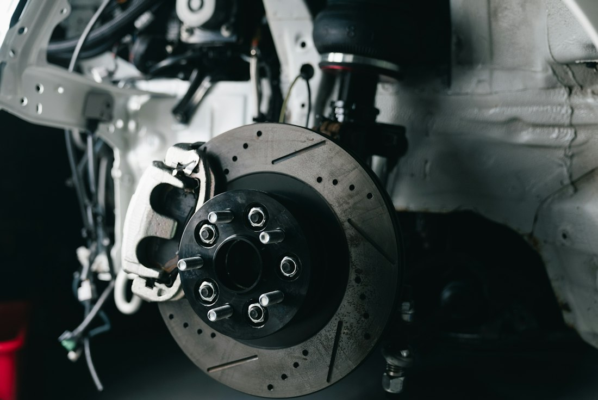
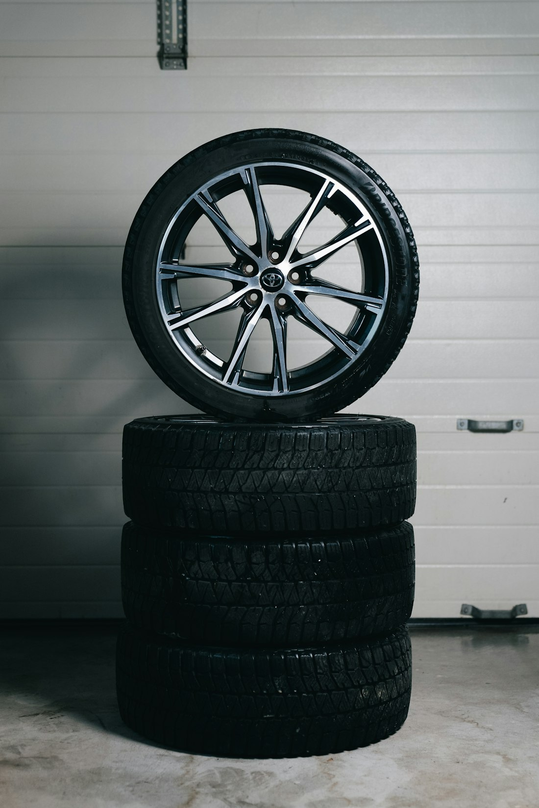
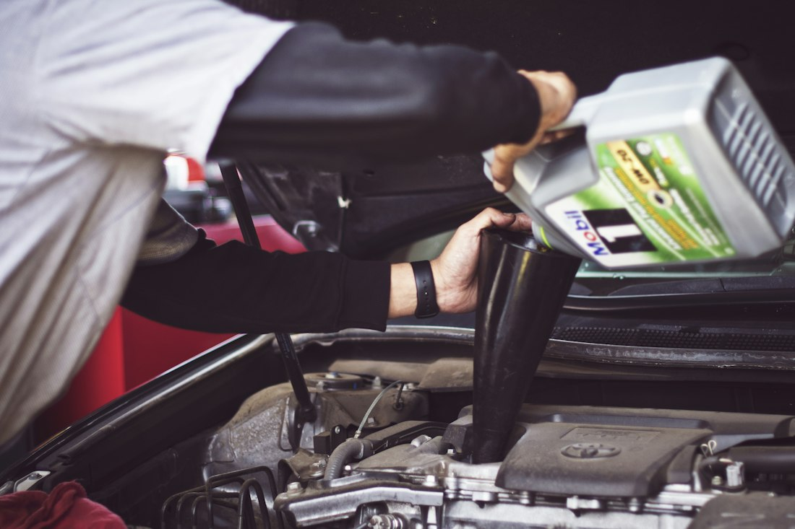
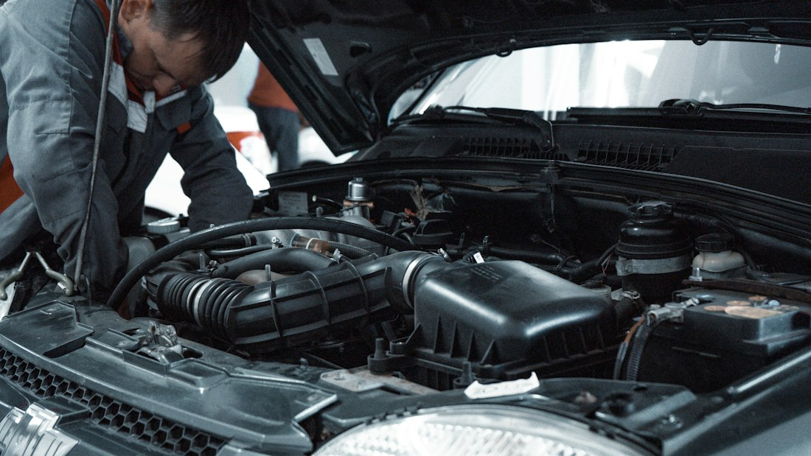
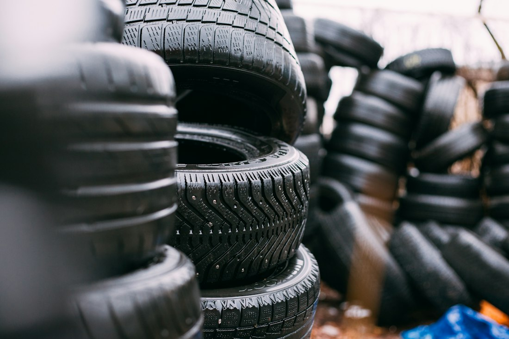
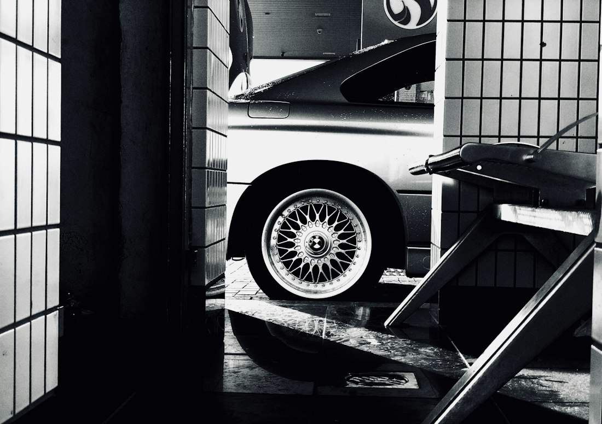

Combo
Troca de óleo
+ alinhamento grátis
Na troca de óleo você ganha um alinhamento. Preços promocionais.
Quero esta ofertaR. Ricardo Franco, 42 · Vila Sobrinho
Seg–Sex 7h30–18h · Sáb 7h30–12h
Alinhamento, balanceamento, freios, suspensão, pneus, troca de óleo e diagnóstico eletrônico com scanner na Vila Sobrinho. Atendimento transparente e orçamento claro direto no WhatsApp.
5,0 no Google · 88 avaliações
Toque e a gente já abre o WhatsApp com o assunto pronto.
A Blue Car Auto Center atende em Campo Grande, MS, com alinhamento, balanceamento, cambagem, freios, suspensão, pneus, troca de óleo e diagnóstico eletrônico de injeção. Tudo no mesmo endereço, na Rua Ricardo Franco, 42, com orçamento claro antes de qualquer serviço.
Scanner e equipamentos que apontam a causa real do problema.
Você sabe o que será feito e quanto custa, antes de aprovar.
Pneus, suspensão, freios, injeção e revisão sob o mesmo teto.
Manutenção preventiva para proteger você e sua família.
Com scanner profissional lemos os códigos de falha e os dados do motor em tempo real. Você sai com a causa provável e a orientação para o reparo, sem chute e sem gastar com peça desnecessária.

Da revisão simples ao reparo mais técnico. Você fala direto com quem entende e recebe um orçamento claro.

01Direção firme, pneus que duram mais e menos vibração.

02Pastilhas, discos e revisão.

03Direto da distribuidora.
Amortecedor novo ou remanufaturado.

05Óleo e filtros certos.

06Bicos, velas, correia dentada e diagnóstico eletrônico.
Na troca de óleo você ganha um alinhamento. Preços promocionais.
Quero esta ofertaManutenção com troca de pastilhas. Freio bom é segurança garantida.
Quero esta oferta
PneusInforme a medida do seu veículo e receba o valor no WhatsApp.
Cotar meus pneusValores e condições sujeitos à confirmação conforme o veículo.
Diagnóstico veicular com equipamento Raster e parecer claro. Evite surpresas e compre com segurança e tranquilidade.

Faça a avaliação completa antes de fechar negócio.
Agendar avaliaçãoConte o que está acontecendo com o carro.
Escolha o melhor dia para trazer o veículo.
Avaliação clara, valor combinado e serviço feito.
Não arrisque. A manutenção preventiva é o melhor caminho para a segurança e a vida útil do seu veículo.
O ideal é agendar pelo WhatsApp para garantir o seu horário e agilizar o atendimento. Você também pode passar na oficina durante o horário de funcionamento.
Traga o carro para o diagnóstico eletrônico. Lemos os códigos de falha, verificamos sensores e atuadores e identificamos a causa provável antes de qualquer troca de peça.
Sim. Trabalhamos com amortecedores novos e remanufaturados (base de troca). Chame no WhatsApp para saber as opções para o seu veículo.
Fazemos um diagnóstico veicular com equipamento Raster, verificando sistema eletrônico e injeção, suspensão, freios, vazamentos de motor e as condições gerais do veículo.
Segunda a sexta, das 7h30 às 18h. Sábado, das 7h30 às 12h. Domingo fechado.
| Segunda | 7h30 – 18h |
| Terça | 7h30 – 18h |
| Quarta | 7h30 – 18h |
| Quinta | 7h30 – 18h |
| Sexta | 7h30 – 18h |
| Sábado | 7h30 – 12h |
| Domingo | Fechado |